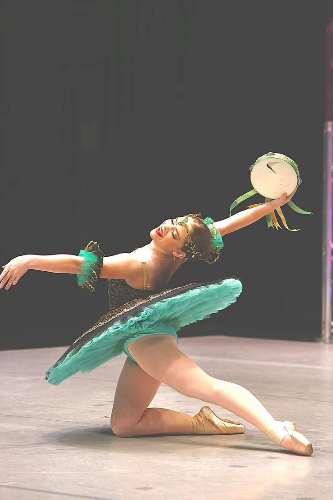

Trama de la Obra
El ballet Esmeralda cuenta la trágica historia de amor de la gitana Esmeralda en el París medieval. Esmeralda salva al poeta Gringoire casándose con él para evitar su ejecución, pero se enamora del capitán Phoebus, lo que despierta los celos del archidiácono Frollo. A lo largo de la obra, Frollo se obsesiona con ella y, en un ataque de celos, apuñala a Phoebus, lo que lleva a Esmeralda a ser acusada injustamente de asesinato y condenada a muerte. Al final, Esmeralda es ejecutada, y Frollo es castigado por Quasimodo, quien defiende a la gitana. La historia está llena de pasión, celos y venganza, y culmina en un destino trágico para Esmeralda.
